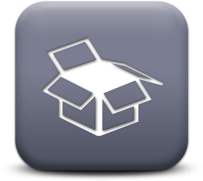

Realistic Research: University, Web-based, and Local Resources
This lesson is meant for students who must begin research in their first semester of the TCID, IA, or the Ph.D. in Technical Communication program who want to develop, improve, or refresh their research skills. Additionally, this lesson is designed to give students strategies which will help them research more efficiently.
Content Areas
This lesson will help you learn to acquire research resources through a review of the following areas:
-
Getting Started: Learn how to access IIT library services and learn basic functionality on the IIT library website.

- Research Timelines: Learn how to formulate a timeline and use it to determine the best way to obtain resources.
-
Requesting Resources: Learn how to request articles and books from other libraries.

-
Local Libraries: Learn how to access local libraries and when to utilize them over interlibrary loan.

- Finding Resources on the Web: Review web-based research tools and their uses.
After you read the above sections, you will be directed to a short quiz which will help you reflect on the strategies presented in this lesson.